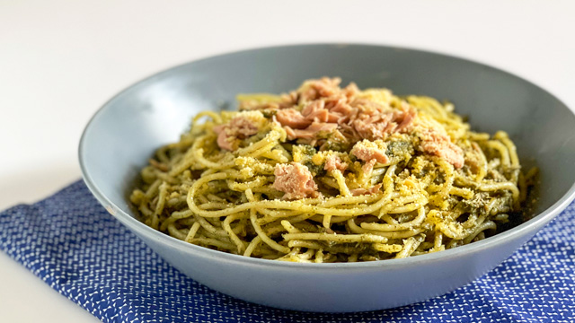

Tuna Pesto Pasta

Description
The best easy tuna pesto pasta dish! It's a simple weeknight meal made with spaghetti, pesto, garlic, tuna and Parmesan made silky with starchy pasta water.
It's so easy, yet uber delicious. No one will know it's made with only 5 ingredients!
Ingredients
- 12 ounces whole grain spaghetti
- 3 tablespoons olive oil
- 3-4 cloves garlic, peeled and minced
- ⅓ cup pesto
- 1 teaspoon coarse salt
- ½ teaspoon freshly ground black pepper
- ½ cup freshly grated Parmesan
- 3 2.6-ounce pouches tuna or 2 4.5-ounce cans tuna in olive oil
- ½ cup flat-leaf Italian parsley, chopped (optional)
Steps
- Bring a large pot or Dutch oven of salted water to a boil. Add the spaghetti and cook according to package directions. Reserve ½ cup of the pasta water. Drain and set aside.
- To the same pot or Dutch oven, add the olive oil and heat to medium. Add the minced garlic and saute 30-60 seconds or until fragrant. Add the pasta water and bring to a simmer.
- Add the cooked spaghetti back to the pot and cook 1-2 minutes or until the pasta water is absorbed, tossing constantly with tongs. Turn the stove off and toss in the pesto, salt, black pepper and half of the grated Parmesan cheese. Taste and adjust the seasoning, if necessary.
- Gently use the tongs to stir in the tuna, leaving it in bite-sized chunks.
- Serve the pasta in bowls topped with remaining grated Parmesan and chopped parsley (if using).
Source: https://thehealthyepicurean.com/tuna-pesto-pasta/
Back to: Odin Recipes